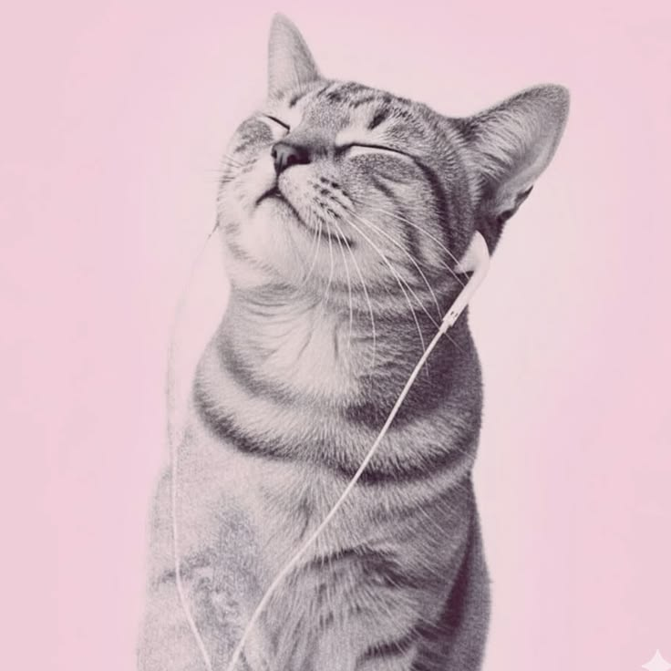
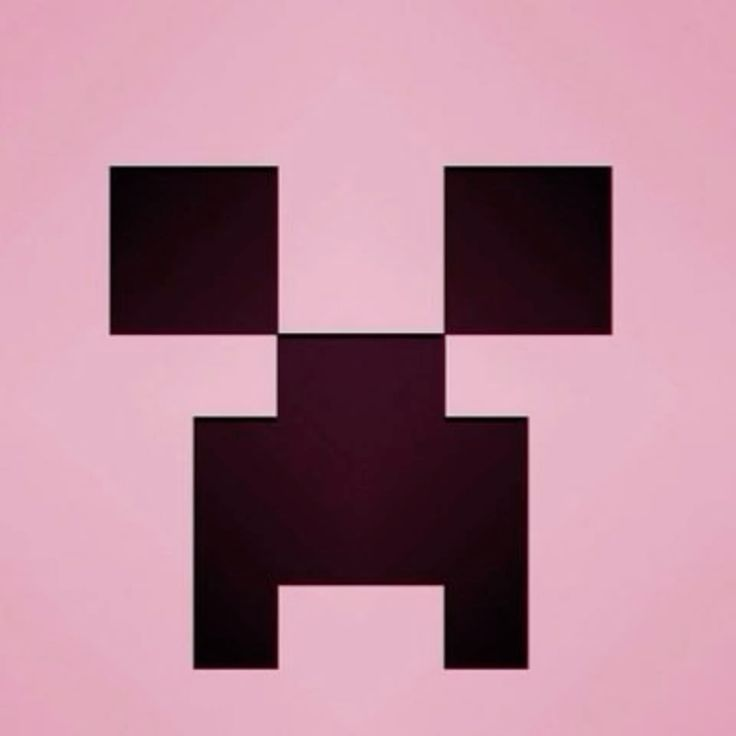

Meu primeiro post?
Por: Manuzinhapvp
A IA nos deixa com insuficiencia cerebral?
Vou compartilhar reflexões sobre tecnologia e programação

Por: Manuzinhapvp
A IA nos deixa com insuficiencia cerebral?

Por: Manuzinhapvp
Por que a áreada tecnologia é tão relacionada aos homens? Sera que é porque nossa sociedade, trata mulheres como inferiores?